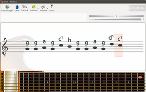
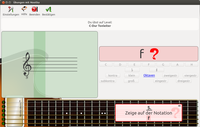
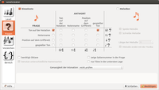

Nootka
Dieser Artikel wurde für die folgenden Ubuntu-Versionen getestet:
Ubuntu 14.04 Trusty Tahr
Zum Verständnis dieses Artikels sind folgende Seiten hilfreich:
Nootka  ist ein interaktives Programm zum Lesen und Spielen lernen von Noten und Melodien mit grafischer Oberfläche (Qt). Es ist ursprünglich für Gitarristen entwickelt worden, kann aber auch für andere Instrumente oder Gesang verwendet werden. Es wird direkt über die Tonerkennung gesteuert. So können die angezeigten Noten direkt gespielt oder gesungen werden. Das Programm befindet sich in aktiver Entwicklung und wird um viele Funktionen erweitert.
ist ein interaktives Programm zum Lesen und Spielen lernen von Noten und Melodien mit grafischer Oberfläche (Qt). Es ist ursprünglich für Gitarristen entwickelt worden, kann aber auch für andere Instrumente oder Gesang verwendet werden. Es wird direkt über die Tonerkennung gesteuert. So können die angezeigten Noten direkt gespielt oder gesungen werden. Das Programm befindet sich in aktiver Entwicklung und wird um viele Funktionen erweitert.

Nootka umfasst derzeit folgende Features:
Noten lesen
Noten vom Blatt spielen
automatische Tonhöhenerkennung
Töne hören (Hörverstehen)
einfache Melodien spielen/singen (Rhythmus befindet sich noch in Entwicklung)
Erstellen individueller Übungen
Einstellung des Programms für jeweiligen Übungszweck (Instrument, Tonlage, etc.)
Prüfungsmodus
Statistische Auswertung der Ergebnisse
Hinweis:
Dieser Artikel bezieht sich auf die Version 1.1.7 RC2, deren Oberfläche mit Hilfe der Grafikbibliothek Qt5 realisiert wurde, während die Version aus den offiziellen Paketquellen noch Qt4 verwendet.
Installation¶
Nootka kann direkt aus den offiziellen Paketquellen installiert werden [1]:
nootka (universe)
 mit apturl
mit apturl
Paketliste zum Kopieren:
sudo apt-get install nootka
sudo aptitude install nootka
Fremdpaket¶
Die in den offiziellen Paketquellen enthaltenen Versionen sind veraltet. Eine aktuelle Version kann bei SourceForge  als DEB-Paket heruntergeladen und manuell installiert werden [2].
als DEB-Paket heruntergeladen und manuell installiert werden [2].
Bedienung¶
Das Programm kann bei Ubuntu-Varianten mit einem Anwendungsmenü über "Bildung -> Nootka" gestartet werden [3].
Durch das Anklicken der Notenzeile oder einer Position auf dem Griffbrett wird der jeweilige Ton gespielt. Die Tonerkennung funktioniert über das Mikrofon. E-Gitarren können direkt über den Mikrofoneingang angeschlossen werden.

Übungsmodus und Prüfung¶
Im Übungsmodus kann man mit unbegrenzter Zeit die jeweilige Übung durchführen. Nach Beenden der Übung kann man sich eine Statistik ansehen. Dort kann man Fehlerschwerpunkte erkennen bzw. seinen Übungsfortschritt messen. Bei einer niedrigen Fehlerquote wird einem eine Prüfung vorgeschlagen.
Bei einer Prüfung läuft die Zeit und man darf nur eine bestimmte Fehlerquote haben. Nach bestandener Prüfung kann man sich ein Zertifikat aushändigen lassen.

Erstellen von Übungen¶
Übungen können sehr vielseitig erstellt werden. Hier kann man den Tonbereich festlegen und die angezeigten Vorzeichen wählen. In der im Bild rechts angezeigten Tabelle kann man zum jeweiligen Fragentyp den Antworttyp auswählen. Zum Beispiel zu einer angezeigten Note den Ton spielen oder Notennamen nennen.
 Programmübersicht
Programmübersicht- Erstellt mit Inyoka
-
 2004 – 2017 ubuntuusers.de • Einige Rechte vorbehalten
2004 – 2017 ubuntuusers.de • Einige Rechte vorbehalten
Lizenz • Kontakt • Datenschutz • Impressum • Serverstatus -
Serverhousing gespendet von